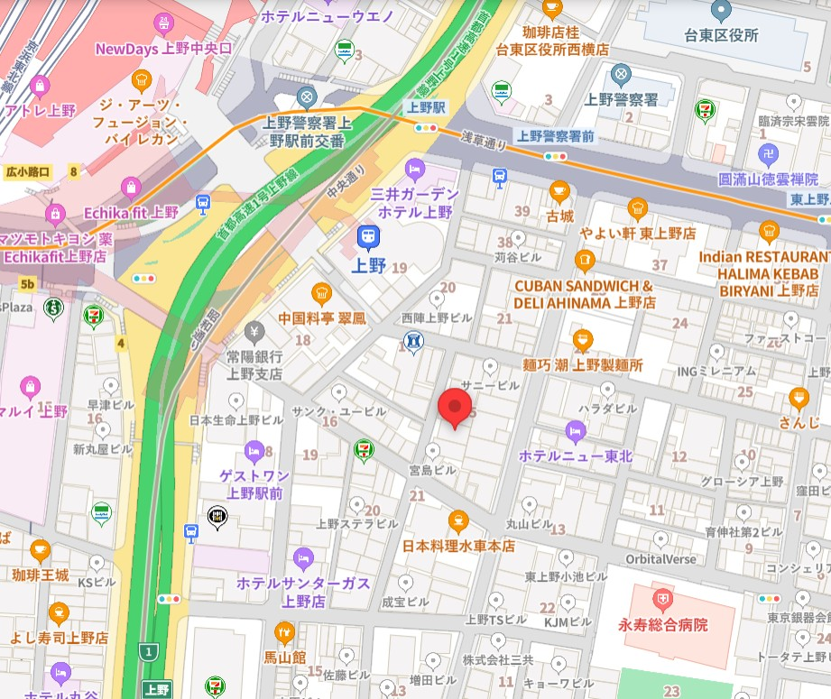

一般内科診療
風邪や発熱、喉の痛み、頭痛、腹痛などの症状を中心に、一般的な体調不良の診療を行っています。また、原因不明の不調や軽い症状であっても、早期診断に努めております。

| 診療時間 | 月 | 火 | 水 | 木 | 金 | 土 | 日 |
|---|---|---|---|---|---|---|---|
| 午前 9:00〜12:00 | ● | ● | ● | ／ | ● | ● | ／ |
| 午後 13:00〜18:00 | ● | ● | ● | ／ | ● | ／ | ／ |
●＝診療 ／＝休診


こんにちは。佐藤医院の院長、佐藤太郎と申します。当院のホームページをご覧いただき、ありがとうございます。
佐藤医院では、「地域に根ざした医療」をモットーに、患者様一人ひとりに寄り添った医療を提供することを目指しております。日常的な健康管理から生活習慣病の予防、さらには専門的な診断や治療まで、幅広い内科診療を行い、地域の皆様の健康を支える役割を担っていきたいと考えております。
私たちは、患者様の不安を少しでも軽減し、安心して診療を受けていただけるよう、わかりやすい説明と丁寧な対応を心掛けております。また、近隣の医療機関とも連携し、必要に応じて高度医療へのアクセスもサポートいたします。どんな小さな不調でも、どうぞお気軽にご相談ください。
これからも、患者様の健康を第一に考え、地域の皆様に信頼される医療機関であり続けるため、スタッフ一同努力してまいります。どうぞよろしくお願いいたします。
佐藤医院 院長 佐藤 太郎
風邪や発熱、喉の痛み、頭痛、腹痛などの症状を中心に、一般的な体調不良の診療を行っています。また、原因不明の不調や軽い症状であっても、早期診断に努めております。
高血圧症、糖尿病、脂質異常症（高コレステロール血症）、メタボリック症候群など、生活習慣病の診断と治療を行います。病気の進行を予防し、健康維持のための生活指導や薬物療法を行います。
胃痛、胃もたれ、胸やけ、便秘、下痢などの消化器系の不調に対応しています。必要に応じて胃カメラや超音波検査などを実施し、胃腸の健康をサポートします。
咳、息切れ、胸の痛みなど、呼吸器系の症状について診療を行っています。季節性の喘息やアレルギー性鼻炎、慢性閉塞性肺疾患（COPD）などにも対応し、適切な治療と予防をサポートします。
佐藤医院は、地域の皆様の健康を守り、より良い生活をサポートすることを使命としています。創立以来、私たちは「患者様一人ひとりに寄り添った診療」を大切にし、地域密着型の医療を提供してまいりました。今後も、皆様の健康維持と病気予防に貢献するため、より良い医療サービスを提供し続けることをお約束いたします。
地域の皆様に安心してご来院いただけるよう、スタッフ一同、誠心誠意対応いたします。それぞれの専門性と温かさを活かし、皆様の健康を支えるパートナーとしてお力になれるよう努めてまいります。

| 診療時間 | 月 | 火 | 水 | 木 | 金 | 土 | 日 |
|---|---|---|---|---|---|---|---|
| 午前 9:00〜12:00 | ● | ● | ● | ／ | ● | ● | ／ |
| 午後 13:00〜18:00 | ● | ● | ● | ／ | ● | ／ | ／ |
●＝診療 ／＝休診
今年もインフルエンザの予防接種を開始いたしました。予約制となっておりますので、お電話または受付にてご予約をお願いいたします。例年、予約が集中しやすいため、早めのご予約をおすすめいたします。
年末年始の休診日は、12月29日（金）〜1月4日（木）となります。年始は1月5日（金）より通常診療を再開いたします。皆様にはご不便をおかけしますが、何卒ご了承くださいますようお願いいたします。
今年も健康診断を実施しております。定期的な健康チェックは、病気の早期発見・予防にとても重要です。各種健康診断メニューをご用意しておりますので、ご希望の方はお電話にてお申し込みください。
当院では引き続き、新型コロナウイルス感染症対策を徹底しております。ご来院の際には、マスクの着用、手指消毒にご協力をお願いいたします。また、発熱や風邪症状のある方は、事前にお電話でご相談いただけるとスムーズにご案内が可能です。
2024年より、オンライン診療を一部導入いたしました。通院が難しい方や、遠方にお住まいの方にご利用いただけます。ご希望の方は、当院スタッフまでお問い合わせください。
風邪や発熱、喉の痛み、頭痛、腹痛などの症状を中心に、一般的な体調不良の診療を行っています。また、原因不明の不調や軽い症状であっても、早期診断に努めております。
高血圧症、糖尿病、脂質異常症（高コレステロール血症）、メタボリック症候群など、生活習慣病の診断と治療を行います。病気の進行を予防し、健康維持のための生活指導や薬物療法を行います。
胃痛、胃もたれ、胸やけ、便秘、下痢などの消化器系の不調に対応しています。必要に応じて胃カメラや超音波検査などを実施し、胃腸の健康をサポートします。
咳、息切れ、胸の痛みなど、呼吸器系の症状について診療を行っています。季節性の喘息やアレルギー性鼻炎、慢性閉塞性肺疾患（COPD）などにも対応し、適切な治療と予防をサポートします。
定期健康診断をはじめ、血液検査、尿検査、心電図、超音波検査、レントゲン検査などを行い、病気の早期発見と予防に努めます。異常が見つかった場合は、経過観察や専門治療へとつなげてまいります。
インフルエンザや肺炎球菌などの各種予防接種を行っています。定期的な接種で感染予防と体調管理を支援いたします。予防接種は予約制となりますので、事前にお問い合わせください。
禁煙をご希望の方に、禁煙治療とサポートを行っています。必要に応じて、ニコチン依存症の治療薬を使用し、無理なく禁煙が継続できるようお手伝いいたします。
佐藤医院は、地域の皆様の健康を守り、より良い生活をサポートすることを使命としています。創立以来、私たちは「患者様一人ひとりに寄り添った診療」を大切にし、地域密着型の医療を提供してまいりました。今後も、皆様の健康維持と病気予防に貢献するため、より良い医療サービスを提供し続けることをお約束いたします。
診療方針
当院の診療方針は、「患者様の声に耳を傾け、共に歩む医療」です。内科を中心にさまざまな疾患へ対応し、症状を的確に診断して最適な治療を提供します。患者様との信頼関係を大切に、わかりやすく丁寧な説明を行い、納得いただける治療方針を一緒に考えます。病気の治療だけでなく、生活習慣の改善や予防についてもアドバイスし、患者様の健康管理を全力でサポートします。治療方法やお薬について不安があれば、遠慮なくお尋ねください。
地域に根ざした医療
佐藤医院は、地域の皆様の健康を守るために、長年にわたり地域医療を支えてきました。定期的な健康診断や健康相談も実施し、地域住民の皆様が健康な生活を送れるようサポートしています。病気の治療だけでなく予防の重要性も強く認識し、定期的な健診を通じた早期発見・早期治療に努めています。
ご家族全員をサポート
当院では、子どもから高齢者まですべての年代の患者様に対応し、各世代に必要な医療サービスを提供しています。予防医療や健康相談を通じて、ご家族全員のより良い生活習慣の定着を目指します。
小児科的対応：子どもの成長や発育に関するアドバイス、予防接種を行っています。
高齢者医療：高齢者の健康管理や介護予防、生活習慣病の管理をしっかりサポートします。
医療設備とチーム医療
診断精度を高めるため、最新の医療設備を導入し診療に活かしています。必要に応じて適切な検査を行い、迅速に対応します。また、医師・看護師・事務スタッフが一丸となるチーム医療を実践し、スタッフ全員が最新の治療法・技術の研鑽を積みながら、患者様に最適なケアを提供します。
医院の理念・方針
佐藤医院は、地域医療の一翼を担う医療機関として「患者様第一」の精神を大切にしています。単に病気を治療するだけでなく、患者様が心身ともに健やかな生活を送れるよう、あらゆる面からサポートすることを使命と考えています。
#
方針
内容
1
信頼関係を築く医療
患者様一人ひとりと向き合い、納得いただける説明を尽くす
2
予防医療の重視
健診・予防接種・健康相談で病気を未然に防ぐ
3
最先端の技術・設備
高度な医療機器と最新知識で精度の高い診断・治療を行う
4
ライフステージに応じた医療
小児から高齢者まで、各年代に必要なケアを提供
5
地域密着型の医療
気軽に相談できる存在として、健康セミナー等で地域に貢献
6
プライバシーと安全の確保
個人情報保護と感染症対策・衛生管理を徹底
7
チーム医療の推進
多職種が連携し、患者様に最適なケアを提供
患者様とともに歩む未来
佐藤医院では、患者様の健康を第一に考え、今後も安心・安全な医療を提供し続けます。どんな小さな悩みでも、お気軽にご相談ください。地域の皆様とともに、より健康で豊かな生活を築いていきたいと考えています。スタッフ一同、皆様のご来院を心よりお待ちしております。
当院に関するご質問をまとめました。その他のご不明点がございましたら、スタッフまでお気軽にお問い合わせください。
診療について
一般診療は予約なしでも受け付けていますが、予約優先制となっております。予防接種や健康診断などは完全予約制です。お電話またはWeb予約をご利用ください。
健康保険証、お薬手帳（お持ちの方）、診療情報提供書（紹介状）があればご持参ください。また、問診票を事前にご記入いただけると受付がスムーズです。
症状や混雑状況によりますが、目安として30分〜1時間程度です。事前に混雑状況をお問い合わせいただくことをお勧めします。
予防接種・健康診断について
例年10月中旬頃から接種を開始します。予約受付は9月末から行っておりますので、詳しくはお知らせをご確認ください。
一般的な健康診断から生活習慣病予防検診まで対応しております。採血、尿検査、心電図、胸部レントゲンなどが含まれます。詳しくはスタッフまでお問い合わせください。
当院では、小児用の予防接種（例：MRワクチン、ヒブワクチンなど）も実施しております。スケジュールについてはお問い合わせください。
お支払いについて
はい、当院では現金、クレジットカード（一部カードを除く）、電子マネーに対応しております。詳しくは受付にてお尋ねください。
はい、再発行可能です。ただし、再発行には日数をいただく場合がありますのでご了承ください。
その他
はい、当院専用の無料駐車場が10台分ございます。満車の場合は近隣のコインパーキングをご利用ください。
可能です。エントランスはバリアフリー設計となっており、スロープもご用意しております。また、院内には車椅子で移動可能なスペースを確保しています。
はい、当院では無料Wi-Fiを提供しております。パスワードは受付でお知らせいたします。
その他のご質問や詳細については、スタッフまでお気軽にお問い合わせください。